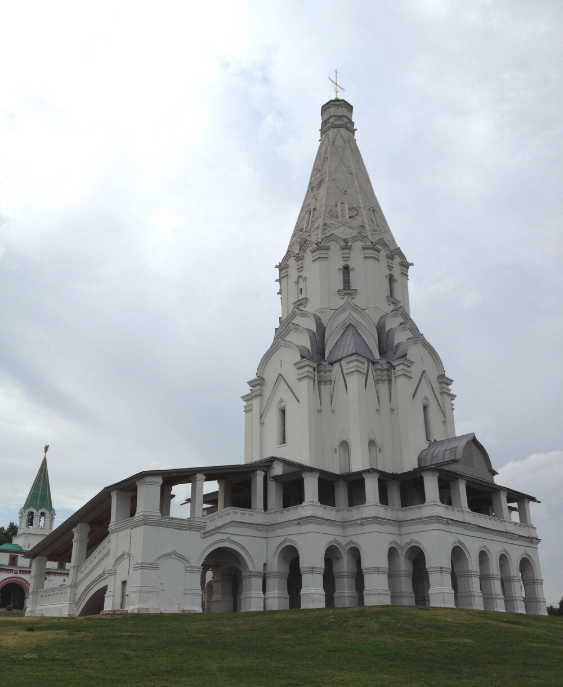
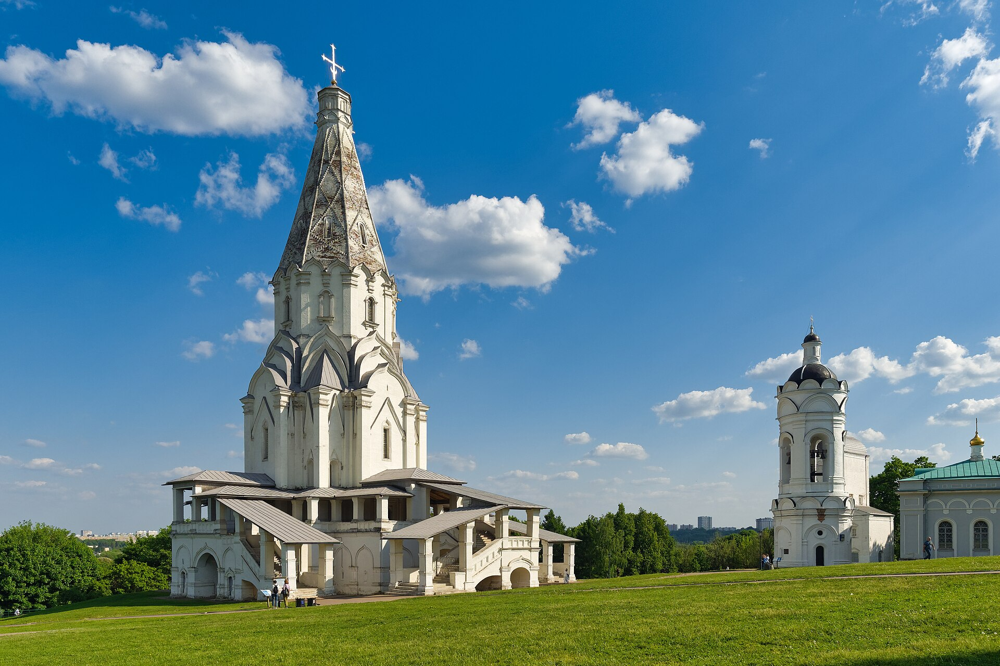
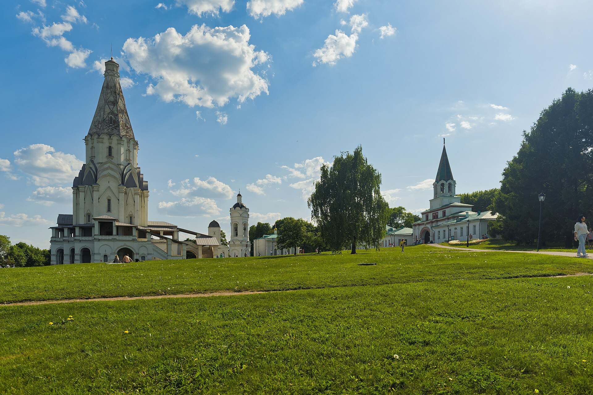
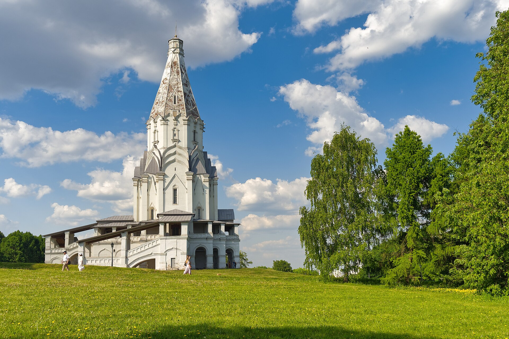
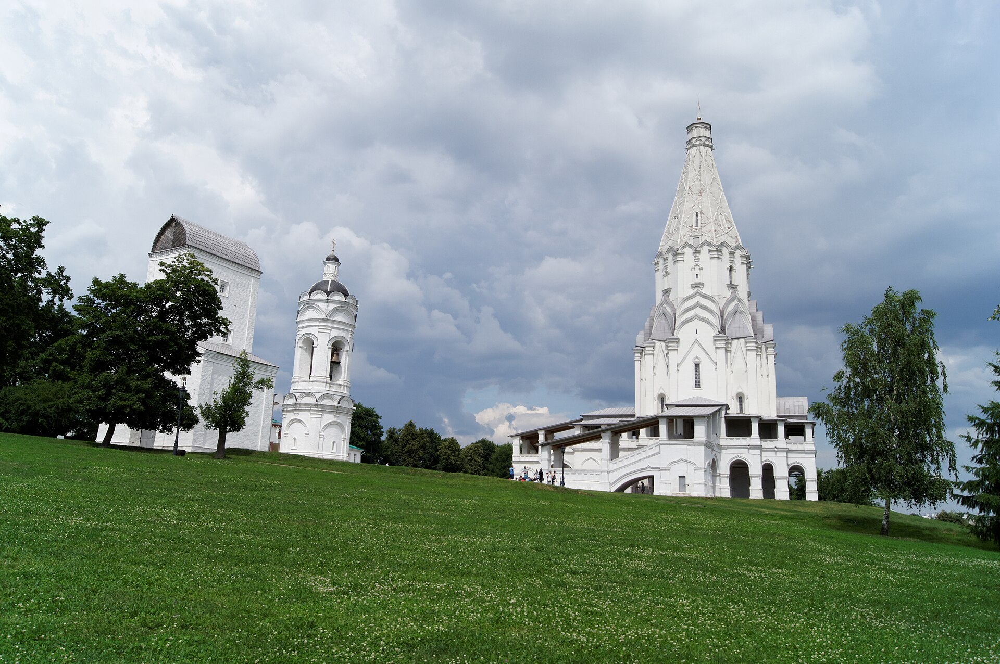
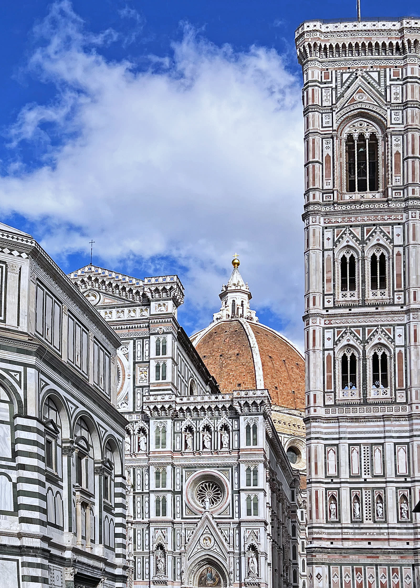
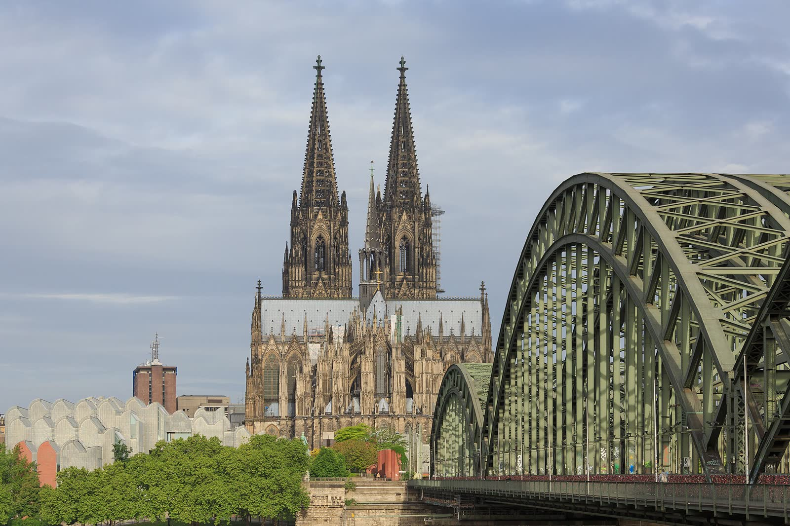
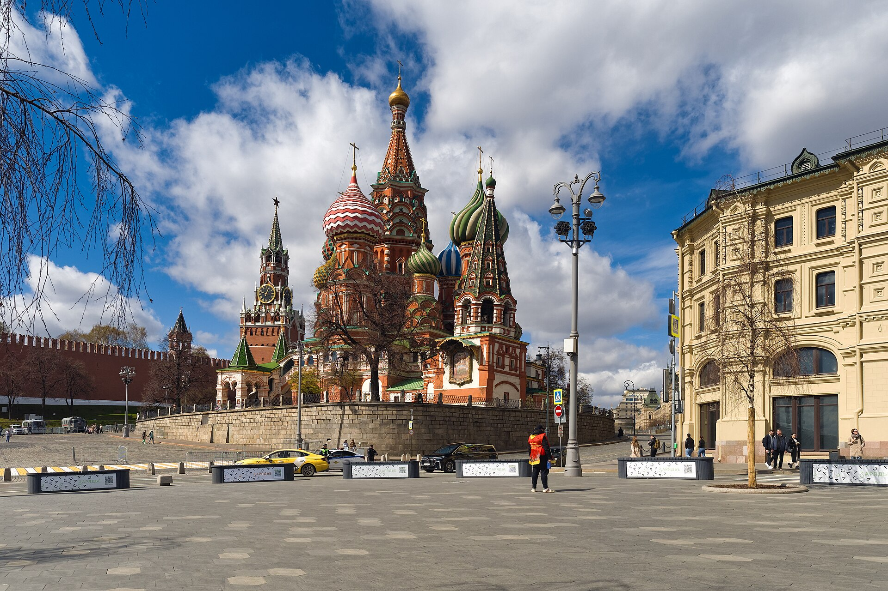

Храм владеет берегом, рекой и дальним видом.

Коломенское · 1532 · архитектурное расследование
Как камню приказали взлететь?
Храм невелик внутри, но с берега выглядит белой вспышкой высотой 62 метра. Здесь поднимается не только шатёр — вверх движется всё здание. Сейчас ты увидишь это собственными глазами.
Фильм · 46 секунд
Храм, который больше самого себя
Пять документальных и образовательных планов, настоящий монтаж и отдельный голос. Фильм создаёт вопрос; лаборатория ниже позволяет проверить ответ.
Документальные фотографии и образовательная модель; исторические события не инсценируются.Голос синтезирован для рабочей версии · субтитры доступны
Аудиопрогулка · 3:55
Четыре движения взгляда
Единая звуковая дорожка ведёт от берега к кресту. На экране меняются реальные точки наблюдения; подробный текст не мешает смотреть.

Открыть полную текстовую расшифровку
Рабочий голос синтезирован. Это настоящий MP3-файл с единым маршрутом и паузами; перед финальным открытием голос будет заменён человеческой записью.
Смотри, а не читай
Один храм — четыре расстояния
Ландшафт, ансамбль, здание и деталь теперь показаны разными документальными ракурсами, а не четырьмя текстовыми карточками.



Все четыре кадра · документальные фотографииЛицензии и авторы · в реестре источников
01 · Твоя очередь
Сможешь заставить камень взлететь?
Выбери четыре решения и следи за силуэтом. Где он тяжелеет? Где ломается? А где взгляд сам мчится к кресту?
Четыре шага — и храм оживёт
1. Дай храму разбег
2. Подхвати движение
3. Не останови взгляд
4. Усиль высоту
Начни с основания. Модель будет меняться после каждого решения.
Это игра с силуэтом, а не инженерный расчёт. Даже без финала секрет уже виден: храм начинает подниматься не с шатра, а прямо от земли — берег, галерея и ярусы передают движение всё выше.
02 · Вот это поворот
Снаружи — гигант. Внутри — семейный храм
Кажется, за этими стенами должен помещаться целый город. Но здесь молилась княжеская семья.
62метра высоты
Здание поражало не размером зала, а силой образа
Факт До 1600 года церковь была самой высокой постройкой Русского государства. В некоторых местах стены достигают 2,5–3 метров — почти длина легкового автомобиля.
И всё же внутри не тесная каморка: от пола до вершины около 41 метра. Представь, как человек XVI века входил сюда, поднимал голову — и терял из виду высоту.
Домовая церковь для великокняжеской семьи, а не вместительный городской собор.
03 · Куда нырнуть?
Выбери одну тайну — или открой все шесть
Почему шатёр не падает зрительно? Кто его придумал? Что здесь русского, а что европейского? Открывай только то, что зацепило.
Открыть архитектурное досье: 6 расследований
04 · Проверка глазами
Три здания тянутся в небо. Но каждое — по-своему
Нажимай кнопки и накладывай контуры. Ты сразу увидишь: у купола, шпиля и русского шатра разный «разбег».
Наложи контуры
Три формы стоят на одной базовой линии. Смотри, где именно начинается подъём.

Движение собирается вокруг огромного свода. Это сравнение принципа, а не доказательство влияния.

Острота сосредоточена в паре шпилей; вертикаль раздваивается.
Взгляд начинает подъём у земли и проходит через всё здание без резкой остановки.
05 · Что случилось потом
Один смелый силуэт — и шатры заговорили на всю страну
Коломенское не осталось одиноким чудом. В XVI–XVII веках каменный шатёр стал одним из самых узнаваемых образов русской архитектуры.

Одиночная вертикаль превращается в целый хор объёмов Покровского собора.
Дерево подсказало камню?
Сильная версия, но прямой цепочки доказательств нет.
Коломенское
Каменная вертикаль становится цельным архитектурным образом.
Хор шатров
Идея развивается в сложных многоглавых ансамблях.
Другой вкус
Шатёр не исчезает сразу, но перестаёт быть главным героем.
Главное открытие
Камень не взлетел. Взлетел твой взгляд.
Берег подхватывает галерею, ярусы сужаются, шатёр принимает движение — и небольшой домовый храм становится государственной вертикалью.
07 · Проверка рассказа
Где факт, а где красивая версия?
Мы не просим верить музею на слово. Здесь можно проверить дату, авторскую гипотезу, научный спор и происхождение фотографии.
Открыть реестр источников, авторов и лицензий
- 01Музей-заповедник «Коломенское» — дата, высота, устройство, русские и западноевропейские элементы, осторожные формулировки авторства и предания.
- 02Культура.РФ / Музей архитектуры — композиция, ренессансные и готические признаки, версия Петрока Малого.
- 03Архитектура Руси XVI века — деревянная традиция и спор Коломенского с Александровской слободой.
- 04Большая российская энциклопедия — место шатровых храмов и готических приёмов в архитектуре XVI века.
- 05Государственный исторический музей — Покровский собор и развитие шатровой композиции.
- 06UNESCO World Heritage Centre — всемирное значение и влияние памятника.
- 07Фотография UNESCO — © UNESCO / Livio Garuccio, CC BY-SA 3.0 IGO, без изменения.
- 08Большая российская энциклопедия: готика — башенные доминанты Кёльнского собора и границы типологического сравнения.
- 09Большая российская энциклопедия: купол — купол Санта-Мария-дель-Фьоре как градостроительная доминанта Возрождения.
- 10Фото общего вида — Alexxx1979, CC BY-SA 4.0; кадрирование для веб и фильма.
- 11Фото ансамбля с Передними воротами — Alexxx1979, CC BY-SA 4.0; кадрирование для веб и фильма.
- 12Нижний ракурс церкви — Alexxx1979, CC BY-SA 4.0; кадрирование для веб и фильма.
- 13Фото архитектурных деталей — Vyacheslav Argenberg, CC BY 4.0; кадрирование для веб.
- 14Санта-Мария-дель-Фьоре — Mariordo, CC BY-SA 4.0; кадрирование и уменьшение для веб.
- 15Кёльнский собор — CEphoto, Uwe Aranas, CC BY-SA 4.0; кадрирование и уменьшение для веб.
- 16Покровский собор — Alexxx1979, CC BY-SA 4.0; кадрирование для веб.
{kind=link}
{kind=link}
{kind=link}
{kind=link}
{kind=link}
{kind=link}
{kind=link}
08 · Куда дальше
Другая русская вертикаль
В Коломенском каменные грани направляют взгляд вверх. У Шухова ту же иллюзию создадут прямые металлические балки.